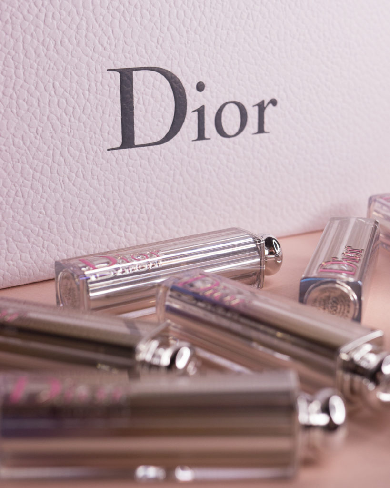

Помада

Помада удачно вписалась в современную концепцию феминизма как женственности, которая принимает саму себя, живет в согласии со своими противоречиями, а не подвергается им.
Женственности, которой удается примирить свои потребности одновременно и в легкомысленных, и в серьезных вещах.
Вот почему красить губы в общественных местах стало не просто позволительным (да-да, еще десять лет назад это считалось моветоном), но даже очень модным жестом.
Аргументы вроде «ношу помаду, чтобы чувствовать себя увереннее» кажутся пережитками прошлого. Тем не менее, Huffington Post пишет, что «эффект помады» — психологическое явление, когда женщина чувствует себя уверенной и привлекательной, если ярко красит губы. Гарвардская медицинская школа провела исследование «эффекта помады», в котором участвовало 186 женщин. Оказалось, что женщины, предпочитавшие яркий макияж губ, получали более высокий балл на экзаменах, потому что чувствовали себя увереннее.
Она была и остается самым обольстительным продуктом макияжа. Но сегодня у губной помады появилась иная миссия: выразить и подчеркнуть характер и индивидуальность своей обладательницы.
Аргументы вроде «ношу помаду, чтобы чувствовать себя увереннее» кажутся пережитками прошлого. Тем не менее, Huffington Post пишет, что «эффект помады» — психологическое явление, когда женщина чувствует себя уверенной и привлекательной, если ярко красит губы. Гарвардская медицинская школа провела исследование «эффекта помады», в котором участвовало 186 женщин. Оказалось, что женщины, предпочитавшие яркий макияж губ, получали более высокий балл на экзаменах, потому что чувствовали себя увереннее.
Она была и остается самым обольстительным продуктом макияжа. Но сегодня у губной помады появилась иная миссия: выразить и подчеркнуть характер и индивидуальность своей обладательницы.
Помада насчитывает историю в несколько тысяч лет.
И шумеры, и древние египтяне (да-да, и мужчины и женщины) уже тогда знали о порошке, который окрашивает губы, делая их привлекательными.
Этот порошок представлял собой смесь из воска, кармина жира и красной охры.
В Древней Греции далеко не каждая женщина высоких моральных нравов могла позволить себе накрасить губы помадой. А все потому, что какое-то время ей в основном пользовались только женщинами определенных профессий, и губная помада была нужна, чтобы «идентифицировать» их.
Своей популярностью помада обязана XX веку – веку кинематографа, когда актрисы хотели выглядеть ярче в кадре, и чтобы привлечь внимание к губам, красили их помадой. Как тут не вспомнить чувственную обольстительную улыбку Мэрилин Монро?
В это же самое время суфражистки, выступая за права женщин, стали красить губы красной помадой, чтобы привлечь внимание к своему движению за предоставление женщинам избирательныех прав. Помада стала для них символом смелости и свободы самовыражения ─ в общем и целом довольно точный посыл, особенно когда дело касается глубоких интенсивных или оригинальных оттенков.
В Древней Греции далеко не каждая женщина высоких моральных нравов могла позволить себе накрасить губы помадой. А все потому, что какое-то время ей в основном пользовались только женщинами определенных профессий, и губная помада была нужна, чтобы «идентифицировать» их.
Своей популярностью помада обязана XX веку – веку кинематографа, когда актрисы хотели выглядеть ярче в кадре, и чтобы привлечь внимание к губам, красили их помадой. Как тут не вспомнить чувственную обольстительную улыбку Мэрилин Монро?
В это же самое время суфражистки, выступая за права женщин, стали красить губы красной помадой, чтобы привлечь внимание к своему движению за предоставление женщинам избирательныех прав. Помада стала для них символом смелости и свободы самовыражения ─ в общем и целом довольно точный посыл, особенно когда дело касается глубоких интенсивных или оригинальных оттенков.